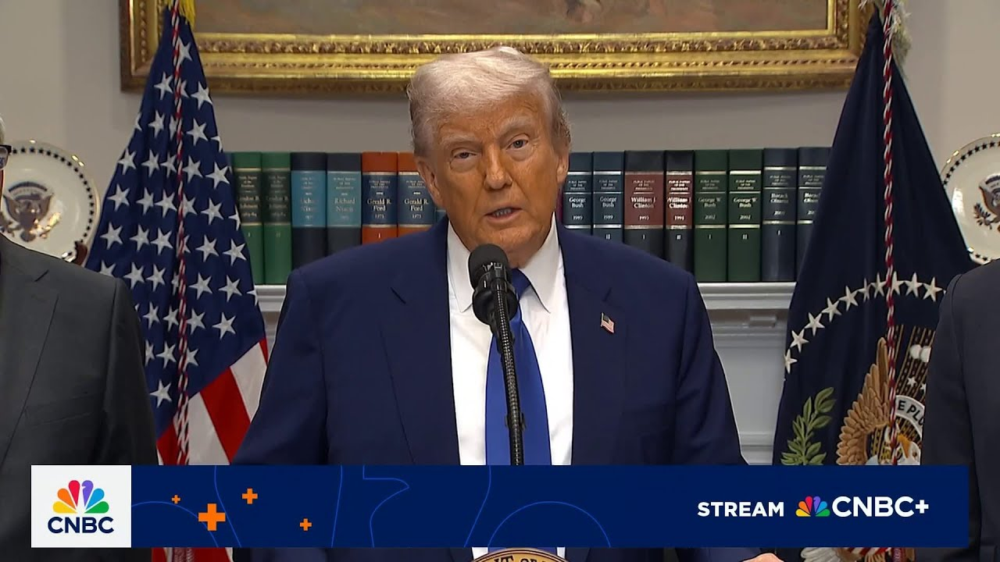

【特朗普总统：日内瓦与中国的会谈非常友好】
Summary: The paragraph discusses President Trump's reflections on friendly talks with China in Geneva, highlighting a trade deal, China's economic challenges, and the potential benefits of opening up China to American businesses. It also mentions the release of an American citizen and upcoming diplomatic meetings.
摘要： 本段讨论了特朗普总统对日内瓦与中国的友好会谈的回顾，强调了一项贸易协议、中国的经济挑战以及向美国企业开放中国的潜在好处。还提到了一名美国公民的获释以及即将举行的外交会议。

⏱️ Estimated Reading Time: 14 min
[Music] We take you to the White House and the president and we look forward to that.
[音乐] 我们带您前往白宫和总统，我们对此充满期待。
I really do look forward to that.
我确实对此非常期待。
But uh the talks in Geneva were very friendly.
但日内瓦的会谈非常友好。
The relationship is very good.
关系非常好。
We're not looking to hurt China.
我们无意伤害中国。
China was being hurt very badly.
中国当时受到了严重伤害。
They were closing up factories.
他们在关闭工厂。
They were having a lot of unrest.
他们有很多动荡。
And they were very happy to be able to do something with us.
他们非常高兴能与我们合作。
and uh the relationship is very very good.
而且关系非常非常好。
I'll speak to President Xi maybe at the end of the week.
我可能会在本周末与习主席通话。
Uh we have some other things we're doing but one of the biggest things uh that we're doing and I don't know if people realize this but uh we made a great deal with China, great trade deal, but it was a much bigger deal originally and then they canled it right in the last day.
我们还有其他事情在做，但最重要的一件事是我们与中国达成了一项伟大的贸易协议，原本规模更大，但他们在最后一天取消了。
Some of you faces I remember were were there when that happened.
我记得当时在场的有些人。
I remember you and we had a deal where they opened up their country to trade with the United States and they took that away at the last moment and then I canceled the whole thing and then six months later we ended up doing a smaller deal but it was a big deal.
我记得你们，我们曾达成协议让他们向美国开放贸易，但他们在最后一刻反悔，于是我取消了整个协议，六个月后我们达成了一项较小的协议，但仍然很重要。
It was $50 billion worth of product that they were going to purchase from our farmers etc.
他们本应从我们的农民等那里购买价值500亿美元的产品。
And we agreed to that.
我们同意了这一点。
People thought it was 15 because they were doing 15.
人们以为是150亿，因为他们当时谈的是150亿。
We made it 50 because I misunderstood the 15.
我们提高到500亿，因为我误解了150亿。
I thought they said I said you got to get 50 because when I asked if you remember the story when I asked what are we doing with them my secretary of agriculture at the time Sunny Purdue said uh sir it's about 15 billion and we're asking for 15 and I thought he said 50 so I said so they came back with the deal at 15 and I said no way I want 50 cuz you said 50 they said sir we didn't say that anyway bottom line I said go back and ask for 50 and they gave us 50 and they were honoring the deal and we would call them up a lot uh for the corn and for the wheat and for everything.
我以为他们说我说要拿到500亿，因为当我问你们是否记得这个故事时，当时的农业部长桑尼·珀杜说大约是150亿，我们要求150亿，但我以为他说的是500亿，所以他们回来说150亿，我说不行，我要500亿，因为你们说了500亿，他们说先生我们没有这么说，总之我说回去要求500亿，他们给了我们500亿，并且遵守了协议，我们经常打电话给他们，关于玉米、小麦和其他一切。
The uh they were honoring the deal and then when Biden got in, they no longer honored the deal.
他们当时遵守了协议，但拜登上台后，他们不再遵守协议。
There was nobody to call.
没有人可以联系。
I would call on an average of once every two weeks to say, "Come on, you have to speed it up a little bit."
我平均每两周打电话一次，说：“快点，你们得加快一点。”
And our farmers were doing great.
我们的农民做得很好。
I said to them, "Buy more land and bigger tractors."
我对他们说：“买更多的土地和更大的拖拉机。”
If you remember, that's what happened.
如果你记得，事情就是这样。
But uh the the deal was a very good deal.
但这项协议非常好。
But the best part of the deal was that we opened up China.
但协议最好的部分是我们打开了中国市场。
China agreed to open itself up to American business to go in.
中国同意向美国企业开放。
And it would have been a great thing, I think, for China.
我认为这对中国来说会是一件好事。
They would be able to see things that they haven't seen.
他们将能够看到从未见过的东西。
They would be able to buy products that they have never been able to buy.
他们将能够购买从未能买到的产品。
Would have been great for American business.
对美国企业来说也会很棒。
I think it would have brought unity between China, better unity between China and the United States.
我认为这会促进中国内部的团结，以及中美之间更好的团结。
And the bottom line is that they canled it the last day.
但他们在最后一天取消了协议。
We were all set to sign it.
我们都已经准备好签署了。
And then I went uh a little bit angry.
然后我有点生气。
I got a little angry.
我有点生气。
I said they canceled the deal.
我说他们取消了协议。
The deal was done.
协议已经完成了。
It was all ready to be signed.
一切都准备好签署了。
And people went over, they came back to me, sir, they don't want to sign the opening up China.
人们过去了，他们回来告诉我，先生，他们不想签署开放中国的协议。
Well, the biggest thing that we're discussing is the opening up China.
我们讨论的最重要的事情就是开放中国。
and they've agreed to do that, but it's going to take a while to uh paper it.
他们已经同意这样做，但需要一些时间来落实。
You know, that's not the easiest thing to paper, but that's the single I think to me.
你知道，这不是最容易落实的事情，但对我来说是最重要的。
Some people would disagree, some people would say we're getting a lot of money with tariffs or whatever, but you know, especially when you add what we already have because remember, we're already getting the 50% on steel and different things.
有些人会不同意，有些人会说我们通过关税等赚了很多钱，但你知道，尤其是加上我们已经有的，因为记住，我们已经在钢铁等方面获得了50%的收益。
That's not included in these numbers.
这些数字不包括这些。
So, you can add that.
所以你可以加上这些。
But, but the biggest thing to me is the opening up.
但对我来说最重要的是开放。
It would be I think it would be fantastic for our businesses if we could go in and compete and compete with China.
如果我们能进入中国并与他们竞争，我认为这对我们的企业来说会非常棒。
It would be a lot of jobs for China.
这将为中国带来很多就业机会。
It would be I think at a time when they can frankly use the jobs and that's what we're uh talking about.
我认为在他们确实需要就业机会的时候，这正是我们讨论的。
So that's a very very important element to add.
所以这是非常重要的补充。
So when Scott uh I watched him uh speak the other day and I think he didn't want to say it but I said it's okay to say it.
所以当斯科特前几天讲话时，我觉得他不想说出来，但我说说出来没关系。
Look, if we don't get it, we don't get it.
听着，如果我们得不到，那就得不到。
But if we don't get it, it won't be a positive thing.
但如果我们得不到，这不是一件积极的事情。
But if we do get it, I think it's maybe the most important thing to happen because if you think about it, we opened up our country to China.
但如果我们得到了，我认为这可能是最重要的事情，因为想想看，我们向中国开放了我们的国家。
They come, we don't I mean, they have very few restrictions.
他们来了，我们几乎没有限制。
And they didn't open their country to us.
而他们没有向我们开放他们的国家。
Never made sense to me.
这对我来说从来都不合理。
It's not fair.
这不公平。
And they've agreed to open China, fully open China.
他们已经同意开放中国，完全开放中国。
And uh I think it's going to be fantastic for China.
我认为这对中国来说会非常棒。
I think it's going to be fantastic for us.
我认为这对我们来说也会非常棒。
And I think it's going to be great for unification and peace.
我认为这对团结与和平也会非常有益。
China will also suspend and remove all of its non-monetary barriers.
中国还将暂停并取消所有非货币壁垒。
They've agreed to do that while uh they're very numerous.
他们已经同意这样做，尽管这些壁垒非常多。
But again, to me, the biggest thing that came out of that meeting is they've agreed now we have to get it papered, but they've agreed to open up China.
但对我来说，那次会议最重要的成果是他们同意开放中国，现在我们需要落实。
It's going to be great for everybody.
这对每个人来说都会很棒。
And third, I'm very happy to announce that Edan Alexander, an American citizen who until recently most thought was no longer living, thought was dead, uh is going to be released in about two hours, actually.
第三，我非常高兴地宣布，埃丹·亚历山大，一名美国公民，直到最近大多数人认为他已经不在人世，实际上将在约两小时后获释。
And he's going to be uh released before the eyes of Steve Whit who has done a fantastic job.
他将在史蒂夫·惠特面前获释，史蒂夫做得非常出色。
I just, you know, I know a lot of people, they have a lot of talent.
我只是，你知道，我认识很多人，他们很有才华。
I know Steve, he had a lot of talent, but I know a lot of people with a lot of talent, but I had, there's one that I thought had a special way about him, special personality, uh, aside from being a good dealmaker.
我认识史蒂夫，他很有才华，但我认识很多有才华的人，但我觉得有一个人特别与众不同，除了是个好的谈判者外，他还有特别的个性。
Had a special way about him and it was Steve.
他就是史蒂夫。
Knew very little about the subject matter.
他对这个主题知之甚少。
Who does?
谁不是呢？
But he learned it in about two hours.
但他大约两小时就学会了。
And he's been fantastic.
他做得非常出色。
So, I want to just thank Steve.
所以，我想感谢史蒂夫。
But they're going to be releasing Edon in about uh 2 hours from now or sometime today, let's say.
但他们将在约两小时后或今天某个时候释放埃丹。
And again, they thought he was dead just a short while ago.
再次强调，不久前他们还认为他已经死了。
His parents are so happy.
他的父母非常高兴。
They're so happy.
他们非常高兴。
So it's uh as you know Iden's the only American citizen is captured and uh held hostage by Hamas since October 7th 2023 and he's coming home to his parents which is really great news.
如你所知，埃丹是自2023年10月7日以来唯一被哈马斯扣押的美国公民人质，他将回到父母身边，这是非常好的消息。
I mean to me it's big news.
对我来说这是大新闻。
They thought he was dead.
他们以为他已经死了。
So that's that.
就是这样。
So we'll be heading there and we'll be uh seeing three primary countries.
所以我们将前往那里，并与三个主要国家会面。
You know all about that.
你们都知道这些。
Saudi Arabia, UAE, Qatar on Thursday's meeting with uh Russia and Ukraine is very important.
沙特阿拉伯、阿联酋、卡塔尔，周四与俄罗斯和乌克兰的会议非常重要。
I was I was very insistent that that meeting take place.
我非常坚持要举行这次会议。
I think good things can come out of that meeting.
我认为这次会议可以带来好的结果。
stop the bloodshed of uh the horrible.
停止可怕的流血事件。
It's a blood bath.
这是一场大屠杀。
Uh but uh that 5,000 more.
但还有5000多人。
It's really much more.
实际上更多。
I'm trying to be conservative.
我尽量保守估计。
More than 5,000 soldiers.
超过5000名士兵。
Russian.
俄罗斯的。
They're not American soldiers.
他们不是美国士兵。
They're from Russia.
他们来自俄罗斯。
They're from Ukraine, but they're people.
他们来自乌克兰，但他们是人。
They're human souls and they're being killed at levels that we haven't seen since the Second World War.
他们是人类的灵魂，死亡人数是自二战以来我们从未见过的。
And it's every week a lot of drone fighting.
每周都有大量的无人机战斗。
It's a whole new form of warfare and it's violent and vicious and uh so that's it.
这是一种全新的战争形式，非常暴力和残酷。
I'd like to go back to China just for a second.
我想再简单提一下中国。
Uh they're very heavy on the fentinel.
他们在芬太尼问题上非常严重。
We're charging them as you know 20% for the fact that they send fentinel into our country and they've agreed that they're going to stop that and you know they'll they'll be rewarded by not having to pay uh you know hundreds of billions of dollars in tariffs.
我们因为他们向我国输送芬太尼而对他们征收20%的关税，他们已经同意停止这样做，并且他们将因此不必支付数千亿美元的关税。
So the fentinol should stop.
所以芬太尼应该停止。
It comes from China.
它来自中国。
It's amazing.
这令人惊讶。
And comes through our southern border.
并通过我们的南部边境进入。
Comes through our northern border too.
也通过北部边境进入。
Comes through Canada and comes through our southern border.
通过加拿大和我们的南部边境进入。
Mo more through much more through the southern border.
更多是通过南部边境进入。
But uh so that's a very important subject to me because I've everybody in this room has lost friends or people that have family members that have died of fentinol.
但这对